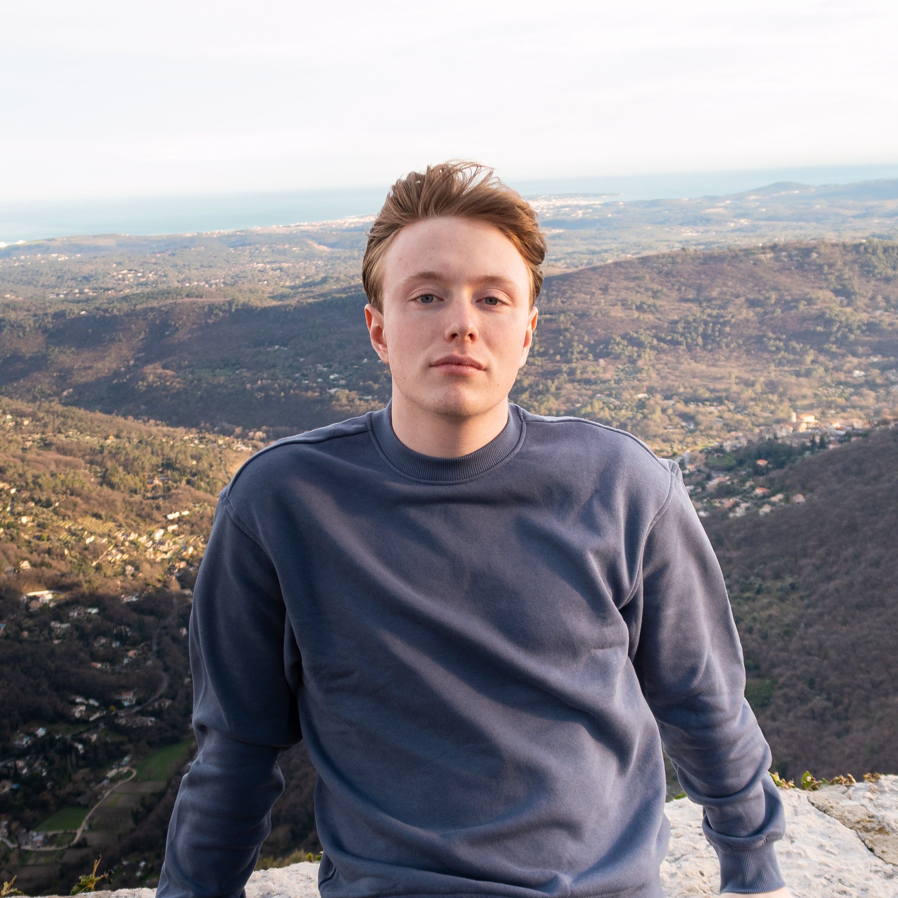

Under utveckling... kom tillbaka senare

Bakom Linsen
Fokuserar på de exakta detaljerna inom flyg, från digitala liveries till höghastighetsfoton. Denna portfolio representerar ett engagemang för visuellt berättande, med betoning på starka kontraster, metalliska texturer och levande atmosfärer.